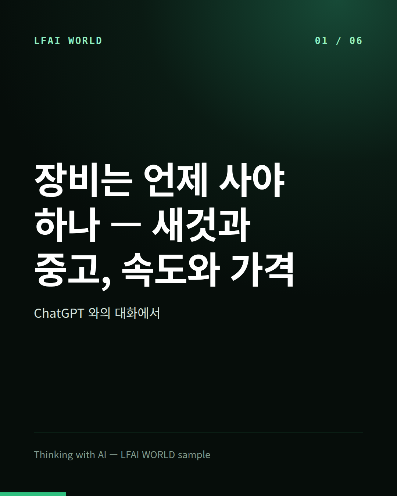
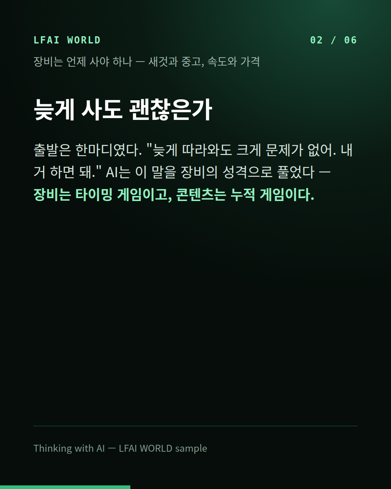
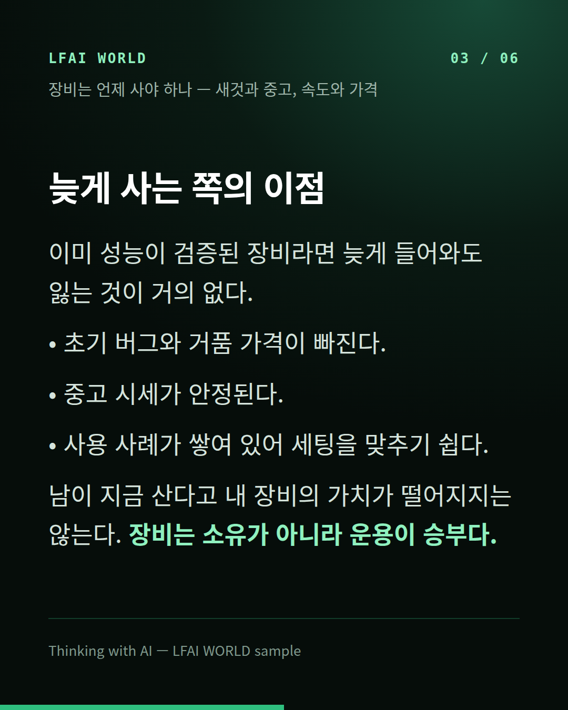
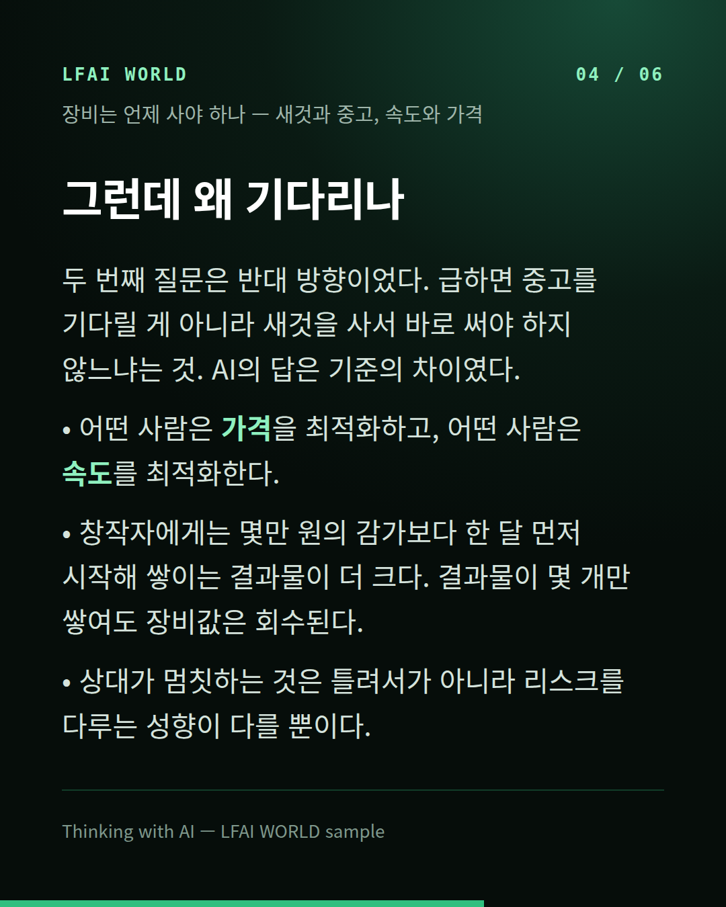
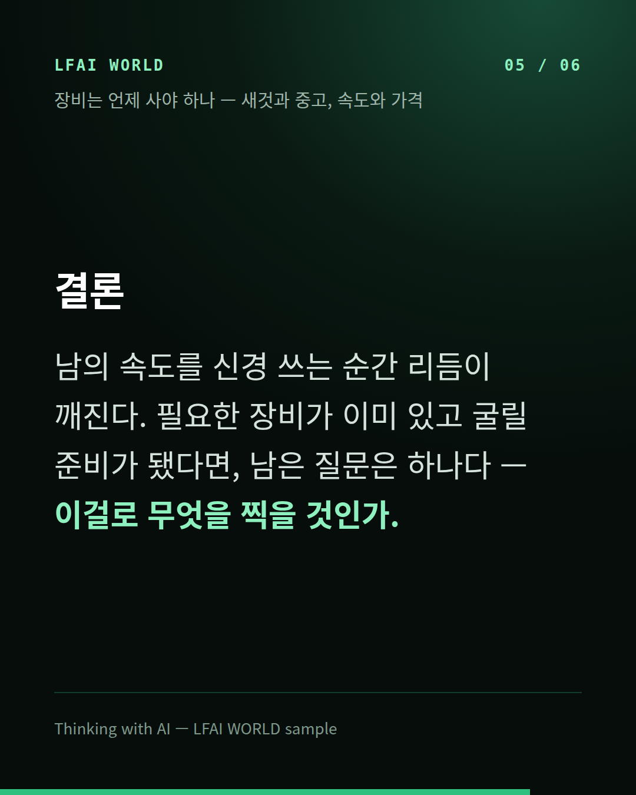
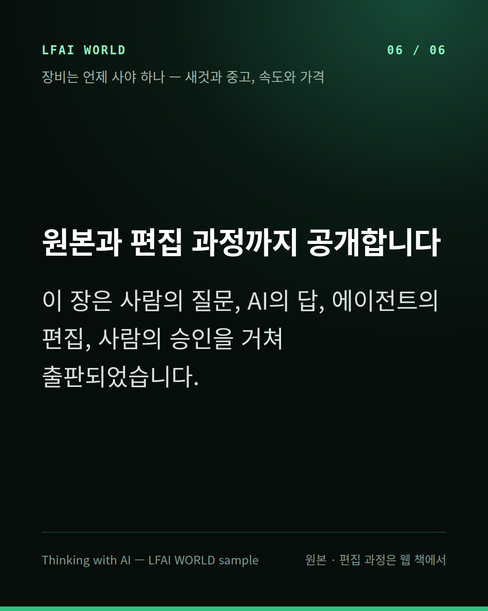

ChatGPT와 나눈 대화 → 에이전트 편집 → 사람 승인 → 12공정






X · Threads (짧게)
장비는 언제 사야 하나 — 새것과 중고, 속도와 가격 장비는 타이밍 게임이고, 콘텐츠는 누적 게임이다. https://lfai-world.github.io/world-05-book/out/20261027-9e2aedda/
블로그 · 페이스북 (소개 글)
장비는 언제 사야 하나 — 새것과 중고, 속도와 가격 ChatGPT와 나눈 대화를 편집해 한 장으로 만들었습니다. 다루는 것: · 늦게 사도 괜찮은가 · 늦게 사는 쪽의 이점 · 그런데 왜 기다리나 · 결론 카드 · 낭독 · 영상 · 교재까지 한 페이지에: https://lfai-world.github.io/world-05-book/out/20261027-9e2aedda/
카카오톡 · 문자
[장비는 언제 사야 하나 — 새것과 중고, 속도와 가격] 장비는 타이밍 게임이고, 콘텐츠는 누적 게임이다. https://lfai-world.github.io/world-05-book/out/20261027-9e2aedda/